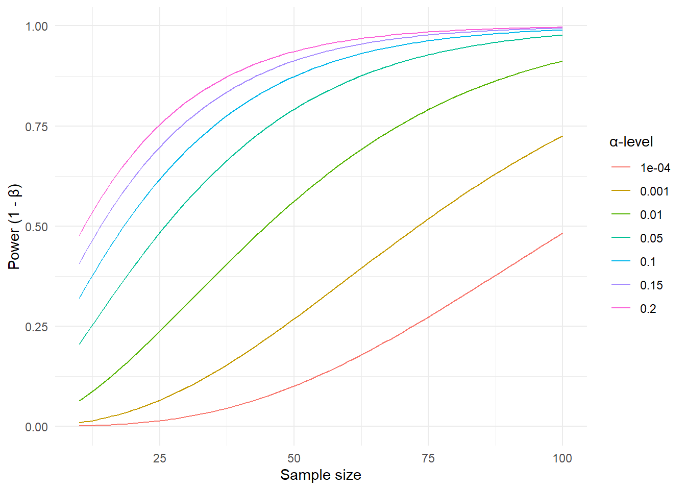

18 Hypothesis tests and statistical power
In frequentist statistics as developed by Neyman and Pearson (Spiegelhalter 2019, 282–82), we use two hypotheses to plan our studies. The null-hypothesis is the one that we use for our hypothesis test. The alternative hypothesis is used to make an estimation of the required sample size in the study. As we are designing a test about the null-hypothesis we can ultimately make two mistakes. First, we could end up rejecting the null-hypothesis despite it being true. If we compare two groups and end up with a result from our study sample rejecting the null-hypothesis even though there is no differences between groups on the population level, we make a Type I error. Instead, if there is a true difference between groups on the population level, but our test fail to reject the null-hypothesis we make Type II error.
In previous chapters we have used the t-test to perform statistical hypothesis tests, we will use this test to further explore the concept of power analysis.
18.1 Defining the alternative hypothesis
According to the Neyman-Pearson approach to statistical testing we should plan our studies with two known (long-run) error-rates. First we should specify what percentage of studies would reject the null-hypothesis if it is actually true. This error-rate is referred to as \(\alpha\). Second, we should specify a rate at which we are willing to miss rejecting the null-hypothesis (or finding evidence for an effect/difference of a certain size) if the alternative hypothesis actually exists in the population. This error rate is called \(\beta\) but often expressed as \(1-\beta\) (statistical power). If we want to have a power (\(1-\beta\)) of 90% we simply state that if the effect exists in the population we will find it with our test in 90% of studies given repeated sampling.
When designing a study we want to balance the two types of errors. As previously noted, we might be in a situation where a Type II error is relatively more serious than a Type I error. If we are trying to determine if a training method without any negative side effects is beneficial on performance, a Type I error might not be so serious as we would recommend using a method without any beneficial effect but also without harmfull effects. If there is a cost of implementing a treatment or training method on the other hand, we want to be more carefull with recommending it as if it has no positive effect the cost of implementation would mean negative consequences for e.g. an athlete.
When designing a study we are often interested in the number of participants needed to obtain certain error-rates. The power of a test, defined as the long-run chance of “detecting” a true alternative hypothesis depends on the size of the effect in the alternative hypothesis, the number of participants in the study, and the \(\alpha\) level. In the figure below we have plotted power values as a function of the sample size, given a fixed size of the effect of 0.4 (see below) and different values of the \(\alpha\) error-rate of 0.001-20%.
This means that: If there is a true effect in the population, we will be more likely to reject the null-hypothesis if we
- Increase the sample size, or
- Increase the rate at which we would reject the null-hypothesis if it was actually true (the \(\alpha\)-level)
18.2 The size of the effect
Above we used a fixed standardized effect size of 0.4 to obtain power values. In the case of comparing two groups, an appropriate standardized effect-size (ES) is the ratio of a meaningful difference (MD) to the estimated population standard deviation (SD)
\[ES = \frac{MD}{SD}\] Finding a meaningful difference is the tricky part in power calculations. In a clinical setting for patient populations, this could mean a difference induced by the treatment that leads to a perceived beneficial effect for an individual. As the outcome of a study could be a reduced pain-score or blood pressure, the design of the study needs to address what difference is of importance.
In elite sports, an improvement in an athletes performance of 0.3-0.4 times the within-athlete performance variability was considered important as it would increase the chance of winning a competition from 38 to 48% for a top athlete (Hopkins, Hawley, and Burke 1999).
18.3 Power and study designs
In healthy Norwegian women between between 30 and 39 years of age, the average VO2max has been estimated to 40 with a standard deviation of 6.8 (Loe et al. 2013). From the age of 30, VO2max decreases by about 3 ml kg-1 min-1 per every ten years. Let’s say that we want to design a study to investigate the effect of a new training method. We might then think that an improvement of VO2max corresponding to a five year decline (half of the average ten year decline) would be important to detect. We compare two training methods in two parallel groups, one group gets to train with traditional method, the other group trains with the our new method. We plan to measure VO2max in both groups, after the intervention. The null hypothesis says that the groups are not different after the intervention. The alternative hypothesis states that the new method leads to a difference between training methods of at least 1.5 ml kg-1 min-1 between groups. We will accept an \(\alpha\) error rate of 5% and \(\beta\) error rate of 20% as we aim for a 80% chance of detecting a true effect (of at least 1.5 ml kg-1 min-1), if it is actually true.
We now have all the numbers we need for a sample size estimation. In R the pwr package provide functions for calculation of sample size, power or effect-sizes in commonly used statistical tests. The effect-size (\(d\)) can be calculated as the smallest effect of interest divided by the population standard deviation \(d = \frac{1.5}{6.8} = 0.22\). We can input our numbers in the function pwr.t.test.
library(pwr)
pwr.t.test(d = 1.5/6.8, sig.level = 0.05, power = 0.8)
Two-sample t test power calculation
n = 323.5688
d = 0.2205882
sig.level = 0.05
power = 0.8
alternative = two.sided
NOTE: n is number in *each* groupFrom the output we can see that we need more than 324 participants in each group to get a power of 80% given an significance-level (\(\alpha\)) of 5%. This is a BIG study!
However, the power of a study is also influence by the study design. In the example above we used a single test after the intervention to determine the number of participants. This is an inefficient design as we need more participants to account for the uncertainty in the sampling process. If we instead rephrase the question to concern the change of VO2max between groups and measure each participant before and after the intervention we are designing a more efficient study, fewer participants are needed to reach the same power. We can calculate an approximate standard deviation of the change score (difference between pre- and post-treatment measurements) by combining an expected SD of pre- and post-treatment scores and the correlation between them (Higgins, Li, and Deeks 2019). We get these numbers from previous studies (Loe et al. 2013; Astorino et al. 2013).
We are still interested in a difference between groups of 1.5 ml kg-1 min-1, i.e. the alternative hypothesis is that the two training methods we are examining will differ 1.5 ml kg-1 min-1 in their average responses. The SD of the change score is determined to be 4.7, the resulting standardized effect size is therefore about 0.32. Given the same power and significance level we get the resulting sample size estimate:
library(pwr)
pwr.t.test(d = 1.5/4.7, sig.level = 0.05, power = 0.8)
Two-sample t test power calculation
n = 155.083
d = 0.3191489
sig.level = 0.05
power = 0.8
alternative = two.sided
NOTE: n is number in *each* groupA change in the design of the study resulted in a sample size less than half of the more inefficient study.
Astorino, T. A., M. M. Schubert, E. Palumbo, D. Stirling, D. W. McMillan, C. Cooper, J. Godinez, D. Martinez, and R. Gallant. 2013. “Magnitude and Time Course of Changes in Maximal Oxygen Uptake in Response to Distinct Regimens of Chronic Interval Training in Sedentary Women.” Journal Article. Eur J Appl Physiol 113 (9): 2361–69. https://doi.org/10.1007/s00421-013-2672-1.
Higgins, Julian PT, Tianjing Li, and Jonathan J Deeks. 2019. “Choosing Effect Measures and Computing Estimates of Effect.” Book Section. In Cochrane Handbook for Systematic Reviews of Interventions, 143–76. https://doi.org/https://doi.org/10.1002/9781119536604.ch6.
Hopkins, W. G., J. A. Hawley, and L. M. Burke. 1999. “Design and Analysis of Research on Sport Performance Enhancement.” Journal Article. Med Sci Sports Exerc 31 (3): 472–85. https://doi.org/10.1097/00005768-199903000-00018.
Loe, H., Ø Rognmo, B. Saltin, and U. Wisløff. 2013. “Aerobic Capacity Reference Data in 3816 Healthy Men and Women 20-90 Years.” Journal Article. PLoS One 8 (5): e64319. https://doi.org/10.1371/journal.pone.0064319.
Spiegelhalter, D. J. 2019. The Art of Statistics : How to Learn from Data. Book. First US edition. New York: Basic Books.